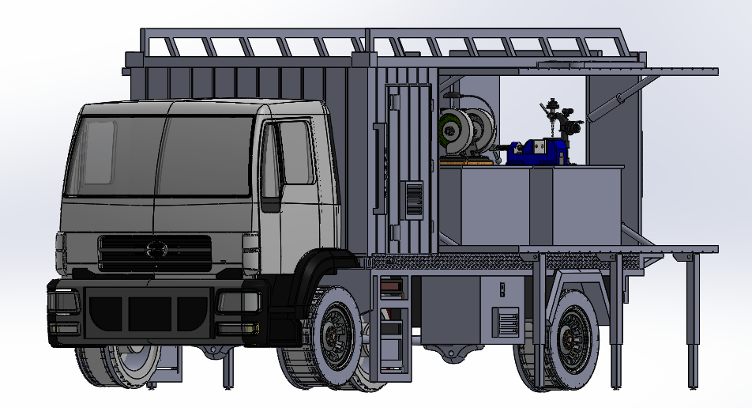

VEHICLE DESIGN & FABRICATION / AZERBAIJAN
Mobile Workshop
Vehicle
A vehicle-based workshop project combining mechanical design with practical fabrication. I developed the vehicle design and internal equipment layout, including the placement of a lathe, cylinders and other workshop equipment. Our team fabricated the vehicle in Azerbaijan.


Vehicle & equipment layout
Designed the workshop body and planned the placement of the lathe, cylinders and associated equipment within the available vehicle space.
The CAD assembly brings the workshop enclosure and equipment arrangement together, showing how the individual components fit within the mobile workspace.
Fabrication in Azerbaijan
Our team fabricated the mobile workshop vehicle in Azerbaijan, taking the project from the design stage into a physical build.
This project connects my CAD and equipment-layout work with practical vehicle fabrication. The images shown here are CAD views of the workshop design.